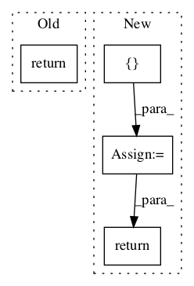

Pattern ID :46
Before Change
def read_cmudict_block(stream):
line = stream.readline().split()
if line:
return [ (line[0], int(line[1]), tuple(line[2:])) ]
else:
return []
After Change
//}
def read_cmudict_block(stream):
entries = []
while len(entries) < 100: // Read 100 at a time.
line = stream.readline()
if line == "": return entries // end of file.
pieces = line.split()
entries.append( (pieces[0], int(pieces[1]), tuple(pieces[2:])) )
return entries
In pattern: SUPERPATTERN
Frequency: 6
Non-data size: 4
Instances Fragment ID: 96676
Project Name: nltk/nltk
Commit Name: 2078d40d84d17569709b26d5c3bd568d539803df
Time: 2007-08-04
Author: edloper@ldc.upenn.edu
File Name: nltk/corpus/reader/cmudict.py
Class Name: AnonimousClass
Method Name: read_cmudict_block
Fragment ID: 96679
Project Name: nltk/nltk
Commit Name: 55cafbff53d167c4e6e1aaddba78da4a61e6c8c4
Time: 2013-09-04
Author: stevenbird1@gmail.com
File Name: nltk/corpus/reader/framenet.py
Class Name: FramenetCorpusReader
Method Name: frames_by_lemma
Fragment ID: 96680
Project Name: nltk/nltk
Commit Name: c6b5fa6dcc360c6542328071c92ac666a70e195b
Time: 2015-01-16
Author: HeroAthen@192-168-1-9.tpgi.com.au
File Name: nltk/tag/stanford.py
Class Name: StanfordTagger
Method Name: tag
Fragment ID: 96667
Project Name: nltk/nltk
Commit Name: f03ee4ee18eea032d1ae737809d6af64547d6769
Time: 2015-02-16
Author: stevenbird1@gmail.com
File Name: nltk/tag/stanford.py
Class Name: StanfordTagger
Method Name: tag
Fragment ID: 96669
Project Name: nltk/nltk
Commit Name: 402aaa02060c1ece1f678fa179b38f4f1bff3bf6
Time: 2011-02-01
Author: peter.ljunglof@heatherleaf.se
File Name: nltk/tag/hunpos.py
Class Name: HunposTagger
Method Name: tag
Fragment ID: 96670
Project Name: nltk/nltk
Commit Name: 159e7ebd31639fef2c3aa55c43ec3a2f0a95d5d5
Time: 2015-06-07
Author: dhgarrette@gmail.com
File Name: nltk/sem/boxer.py
Class Name: BoxerOutputDrsParser
Method Name: parse_variable